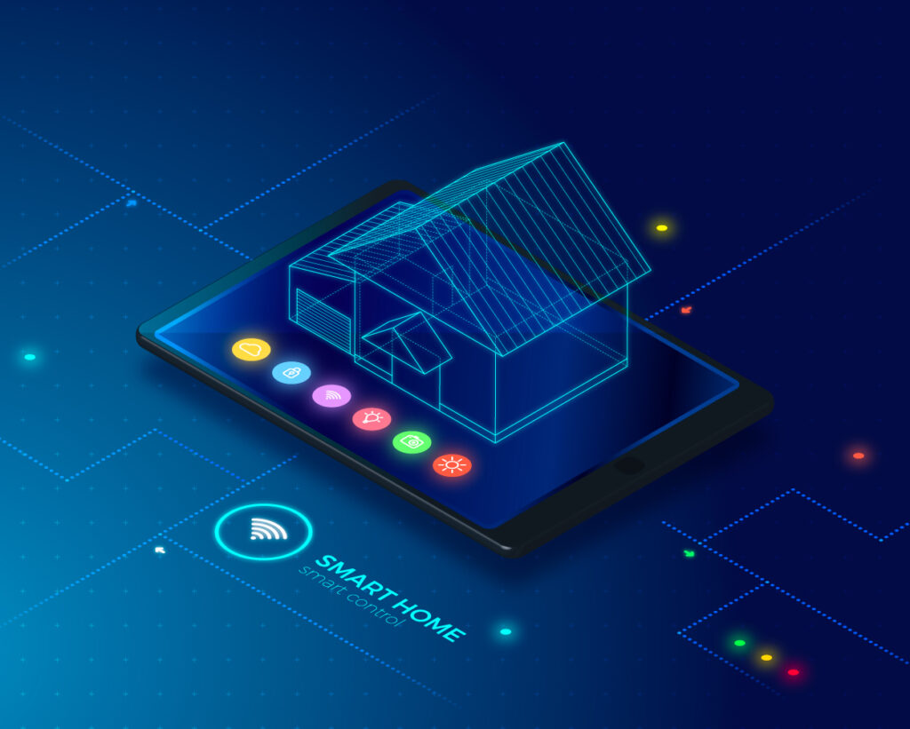

AI RELATE
NATURAL LANGUAGE PROCESSING
- Natural Language Processing, usually shortened as NLP, is a branch of artificial intelligence that deals
with the interaction between computers and humans using the natural language.

- It plays a very important role in structuring data because it prepares text and speech for machines.
COMPUTER VISION
- Computer Vision, often abbreviated as CV, in simple term trains computer to understand and interpret the
visual world.
- It is a science that combines theory and technology to build artificial systems.
ROBOTICS
- Robotics means building and programming robots so that they can operate in complex, real-world
scenarios.
- In a way, robotics is the ultimate challenge of AI since it requires a combination of virtually all
areas of AI.
SMART LIVING: SMART HOMES TO SMART CITIES
- SMART HOME - A smart home is a residence that uses internet-connected devices to enable the remote
monitoring and management of appliances.
- Devices required for a smart home are:
- SMART HOME ASSISTANT (SMART SPEAKER)
- SMART HUB
- SMART LIGHTING (SMART LIGHT BULBS)
- SMART THERMOSTAT
Next page